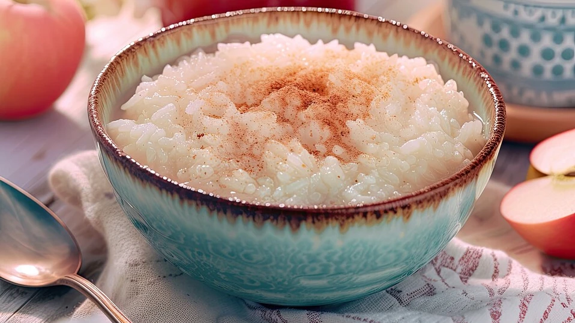

Milchreis

Beschreibung
Der perfekte Milchreis - Grundrezept
Zutaten für 4 Portionen
- Vollmilch (zimmerwarm) 1L
- Milchreis 250 g
- Zucker 4 EL
- Butter 1 EL
- Vanilleschote 1 oder 1 Pck. Vanillezucker
- Zimtzucker oder Apfelmus, Rote Grütze bzw. frische Früchte
Zubereitung
- In einem großen(!) Topf die Butter schmelzen, anschließend den Rundkornreis kurz in der Butter anschwitzen
- Nun die zimmerwarme Vollmilch sowie 4 EL Zucker hinzugeben
- Wenn vorhanden, das Mark einer Vanilleschote sowie die aufgeschlitzte Schote ebenfalls in den Topf geben; andernfalls Vanillezucker hinzufügen
- Alles unter vorsichtigem Rühren mit dem Holzkochlöffel einmal aufkochen lassen und dabei aufpassen, dass sich nichts am Topfboden ansetzt
- Nun die Temperatur der Herdplatte zurückschalten - die Milch sollte noch leicht weiterköcheln
- Den Milchreis im geschlossenen Topf circa 30 Minuten ziehen lassen. Nach ca. 15 Minuten, evtl. auch früher, umrühren
- Nach 30 Minuten ist der Reis servierfertig, er kann warm und kalt gegessen werden
- Nach Geschmack Zimt und Zucker mischen und über den Milchreis geben oder Apfelmus, Rote Grütze, frisches Obst, etc. dazu reichen
Home